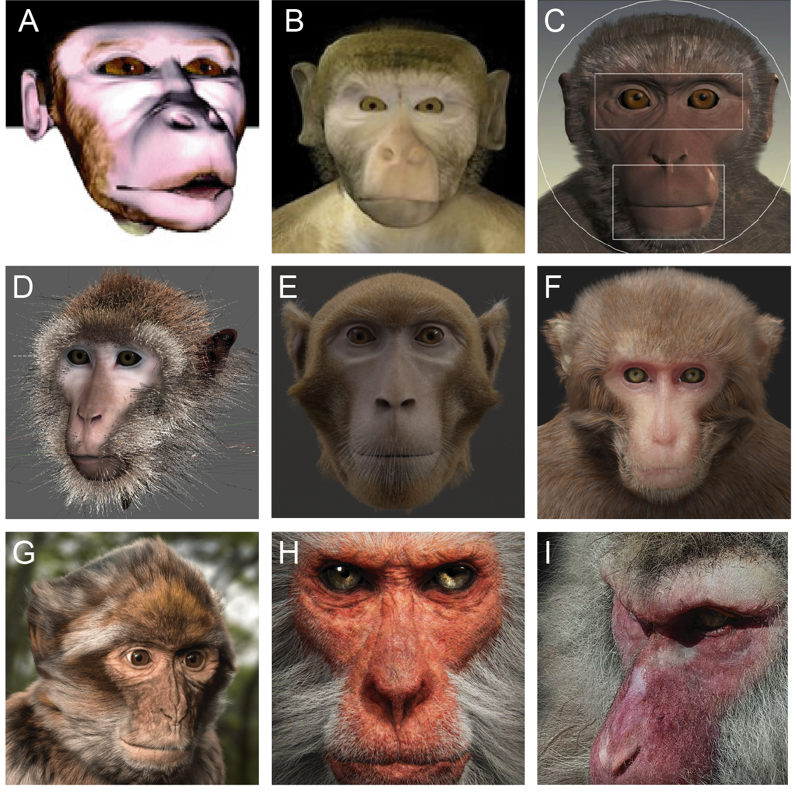

MF3D Background¶
Why are neuroscientists creating virtual reality monkeys? The answer requires a brief history of the field of social neuroscience and the importance of the macaque monkey as an animal model for understanding the human brain and psychiatric illness.
Studying the Social Primate Brain¶

In order to advance our limited understanding of how complex primate brains like ours work to coordinate social interactions, we need animal models that allow us to ethically study the neural correlates at the cellular level. Non-human primates represent a crucial resource in this endeavor, and the Rhesus monkey (Macaca mulatta) - a species of Old World monkey - is one of the most promising and popular (Figure 1; NIH, 2017).

In the wild, Rhesus macaques have the second largest territorial range of any primate on earth (after humans). They live in large troops composed of up to hundreds of individuals, which are organized by strict social hierarchies and governed by rules of social interaction. They rely predominantly on their high acuity vision for gathering information about the intentions and internal states of their conspecifics. The similarity of these macaque traits to our own make the macaque the best available animal model for understanding the neural processes underlying complex social behaviors that are unique to primates like us.
Face processing in the macaque brain¶
Neural responses to images of faces in the macaque brain were first reported by Gross et al. (1972). The approach of recording extracellular spiking activity during visual stimulation of the anesthetized monkey followed that of Hubel & Wiesel (1968). Subsequent electrophysiology studies revealed that many of these neurons in the superior temporal sulcus (STS) are sensitive to specific types of facial information, including head and eye gaze direction, identity, and facial expression (Perrett et al., 1982; 1985; Hasselmo, Rolls & Baylis, 1989). The development of non-invasive functional magnetic resonance imaging (fMRI) in the 1990s subsequently lead to the discovery that many of these face-selective neurons were clustered together in specific regions of the macaque inferotemporal (IT) cortex (Tsao et al., 2003), prefrontal cortex (Tsao et al., 2008) and medial temporal lobe (Landi & Freiwald, 2017).
Development of Macaque Avatars¶
Digital macaque ‘avatars’ have been used in behavioral and neuroscience research for over a decade (Figure 1). This approach has typically involved a trade-off between ethological validity (i.e. how natural and/or ‘real’ the visual stimulus appears to the subject) and experimental control. Indeed, an early study concluded that macaque subjects may experience a perceptual phenomenon known as the ‘uncanny valley’, whereby semi-realistic artificial representations of faces elicit more negative emotional responses than either real or obviously artificial faces (Steckenfinger & Ghazanfar, 2009).
Since the earliest uses of macaque avatars (Figure 1A), technological advances in graphic processing power and decreases in cost have lead to increased accessibility and photorealistic quality of rendering for complex particle systems (such as hair and fur) and naturalistic lighting (such as subsurface scattering). Given a studio budget, state of the art CGI is now almost indistinguishable from video, while even low-budget projects utilizing open-source tools such as Blender can now achieve high-quality results.
Despite these technological advances, the time and cost of employing skilled digital professionals to generate realistic 3D models of macaques can be prohibitive for lab budgets. The duplication of these efforts across many labs who opt not to share their intellectual property is ultimately a waste of resources for the research community. MF3D is the first ever publicly available macaque avatar resource for the scientific research community.
{kind=link}
Figure 1. Developmental history of digital macaque avatars. A. Steckenfinger & Ghazanfar, 2009 B. Ghazanfar et al., 2013 C. Artist: Tim Mrozek (Paukner et al., 2014; Simpson et al., 2016) D. Artist: Damien Montelliard (Wilson et al., 2019) E. (Siebert et al., 2019) F. Artist: Kelly Bullock, 2019 G. Barbary macaque (M.sylvanus), by artist Shariq Altaf, 2018. H. Japanese macaque (M.fuscata) by artist Andre Holzmeister, 2017. I. Japanese macaque by studio Kleos Animation, 2018.